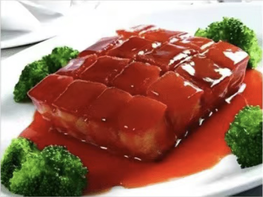

苏式红烧肉
2024-xx-xx
苏式红烧肉是苏州传统名菜之一，以其色泽红亮、肥而不腻、酥烂入味而著称。这道菜选用上等五花肉，经过精心烹饪，肉质鲜嫩，入口即化。制作时，先将五花肉切成块状，用开水焯水去腥，然后放入锅中，加入酱油、糖、料酒、姜片、葱段等调料，慢火炖煮至肉质酥烂，汤汁浓稠。苏式红烧肉的制作关键在于火候的掌握和调料的配比，使得肉质鲜美，汤汁醇厚。
在苏州，红烧肉常常作为宴席上的主菜，也是家庭日常餐桌上的常客。它不仅是一道美食，更承载着苏州人对家乡味道的深厚情感。品尝苏式红烧肉时可以搭配一碗白米饭，让肉汁与米饭充分融合，享受那独特的美味。
